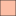

<!doctype html>
<html lang="en">
    <head>
        <meta charset="utf-8">
        <meta http-equiv="X-UA-Compatible" content="IE=edge">
        <meta name="viewport" content="initial-scale=1,user-scalable=no,maximum-scale=1,width=device-width">
        <meta name="mobile-web-app-capable" content="yes">
        <meta name="apple-mobile-web-app-capable" content="yes">
        <link rel="stylesheet" href="css/leaflet.css">
        <link rel="stylesheet" href="css/qgis2web.css"><link rel="stylesheet" href="css/fontawesome-all.min.css">
        <style>
        html, body, #map {
            width: 100%;
            height: 100%;
            padding: 0;
            margin: 0;
        }
        </style>
        <title></title>
    </head>
    <body>
        <div id="map">
        </div>
        <script src="js/qgis2web_expressions.js"></script>
        <script src="js/leaflet.js"></script>
        <script src="js/leaflet.rotatedMarker.js"></script>
        <script src="js/leaflet.pattern.js"></script>
        <script src="js/leaflet-hash.js"></script>
        <script src="js/Autolinker.min.js"></script>
        <script src="js/rbush.min.js"></script>
        <script src="js/labelgun.min.js"></script>
        <script src="js/labels.js"></script>
        <script src="data/NumberofCaseStudiesCountries_0.js"></script>
        <script>
        var map = L.map('map', {
            zoomControl:true, maxZoom:28, minZoom:1
        })
        var hash = new L.Hash(map);
        map.attributionControl.setPrefix('<a href="https://github.com/tomchadwin/qgis2web" target="_blank">qgis2web</a> &middot; <a href="https://leafletjs.com" title="A JS library for interactive maps">Leaflet</a> &middot; <a href="https://qgis.org">QGIS</a>');
        var autolinker = new Autolinker({truncate: {length: 30, location: 'smart'}});
        var bounds_group = new L.featureGroup([]);
        function setBounds() {
            if (bounds_group.getLayers().length) {
                map.fitBounds(bounds_group.getBounds());
            }
        }
        function pop_NumberofCaseStudiesCountries_0(feature, layer) {
            var popupContent = '<table>\
                    <tr>\
                        <td colspan="2"><strong>name</strong><br />' + (feature.properties['name'] !== null ? autolinker.link(feature.properties['name'].toLocaleString()) : '') + '</td>\
                    </tr>\
                    <tr>\
                        <td colspan="2"><strong>continent</strong><br />' + (feature.properties['continent'] !== null ? autolinker.link(feature.properties['continent'].toLocaleString()) : '') + '</td>\
                    </tr>\
                    <tr>\
                        <td colspan="2"><strong>region</strong><br />' + (feature.properties['region'] !== null ? autolinker.link(feature.properties['region'].toLocaleString()) : '') + '</td>\
                    </tr>\
                    <tr>\
                        <td colspan="2"><strong>Case</strong><br />' + (feature.properties['Case'] !== null ? autolinker.link(feature.properties['Case'].toLocaleString()) : '') + '</td>\
                    </tr>\
                </table>';
            layer.bindPopup(popupContent, {maxHeight: 400});
        }

        function style_NumberofCaseStudiesCountries_0_0(feature) {
            if (feature.properties['Case'] >= 0.000000 && feature.properties['Case'] <= 0.000000 ) {
                return {
                pane: 'pane_NumberofCaseStudiesCountries_0',
                opacity: 1,
                color: 'rgba(35,35,35,1.0)',
                dashArray: '',
                lineCap: 'butt',
                lineJoin: 'miter',
                weight: 1.0, 
                fill: true,
                fillOpacity: 1,
                fillColor: 'rgba(216,216,216,1.0)',
                interactive: true,
            }
            }
            if (feature.properties['Case'] >= 0.000000 && feature.properties['Case'] <= 3.000000 ) {
                return {
                pane: 'pane_NumberofCaseStudiesCountries_0',
                opacity: 1,
                color: 'rgba(35,35,35,1.0)',
                dashArray: '',
                lineCap: 'butt',
                lineJoin: 'miter',
                weight: 1.0, 
                fill: true,
                fillOpacity: 1,
                fillColor: 'rgba(252,190,165,1.0)',
                interactive: true,
            }
            }
            if (feature.properties['Case'] >= 3.000000 && feature.properties['Case'] <= 7.000000 ) {
                return {
                pane: 'pane_NumberofCaseStudiesCountries_0',
                opacity: 1,
                color: 'rgba(35,35,35,1.0)',
                dashArray: '',
                lineCap: 'butt',
                lineJoin: 'miter',
                weight: 1.0, 
                fill: true,
                fillOpacity: 1,
                fillColor: 'rgba(251,112,80,1.0)',
                interactive: true,
            }
            }
            if (feature.properties['Case'] >= 7.000000 && feature.properties['Case'] <= 10.000000 ) {
                return {
                pane: 'pane_NumberofCaseStudiesCountries_0',
                opacity: 1,
                color: 'rgba(35,35,35,1.0)',
                dashArray: '',
                lineCap: 'butt',
                lineJoin: 'miter',
                weight: 1.0, 
                fill: true,
                fillOpacity: 1,
                fillColor: 'rgba(211,32,32,1.0)',
                interactive: true,
            }
            }
            if (feature.properties['Case'] >= 10.000000 && feature.properties['Case'] <= 13.000000 ) {
                return {
                pane: 'pane_NumberofCaseStudiesCountries_0',
                opacity: 1,
                color: 'rgba(35,35,35,1.0)',
                dashArray: '',
                lineCap: 'butt',
                lineJoin: 'miter',
                weight: 1.0, 
                fill: true,
                fillOpacity: 1,
                fillColor: 'rgba(103,0,13,1.0)',
                interactive: true,
            }
            }
        }
        map.createPane('pane_NumberofCaseStudiesCountries_0');
        map.getPane('pane_NumberofCaseStudiesCountries_0').style.zIndex = 400;
        map.getPane('pane_NumberofCaseStudiesCountries_0').style['mix-blend-mode'] = 'normal';
        var layer_NumberofCaseStudiesCountries_0 = new L.geoJson(json_NumberofCaseStudiesCountries_0, {
            attribution: '',
            interactive: true,
            dataVar: 'json_NumberofCaseStudiesCountries_0',
            layerName: 'layer_NumberofCaseStudiesCountries_0',
            pane: 'pane_NumberofCaseStudiesCountries_0',
            onEachFeature: pop_NumberofCaseStudiesCountries_0,
            style: style_NumberofCaseStudiesCountries_0_0,
        });
        bounds_group.addLayer(layer_NumberofCaseStudiesCountries_0);
        map.addLayer(layer_NumberofCaseStudiesCountries_0);
        var baseMaps = {};
        L.control.layers(baseMaps,{'Number of Case Studies Countries<br /><table><tr><td style="text-align: center;"></td><td>0</td></tr><tr><td style="text-align: center;"></td><td>1 - 3</td></tr><tr><td style="text-align: center;"></td><td>3 - 7</td></tr><tr><td style="text-align: center;"></td><td>7 - 10</td></tr><tr><td style="text-align: center;"></td><td>10 - 13</td></tr></table>': layer_NumberofCaseStudiesCountries_0,}).addTo(map);
        setBounds();
        </script>
    </body>
</html>
